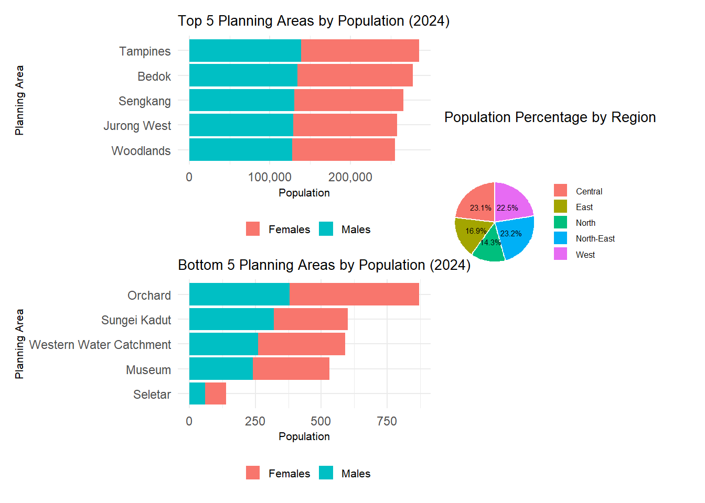
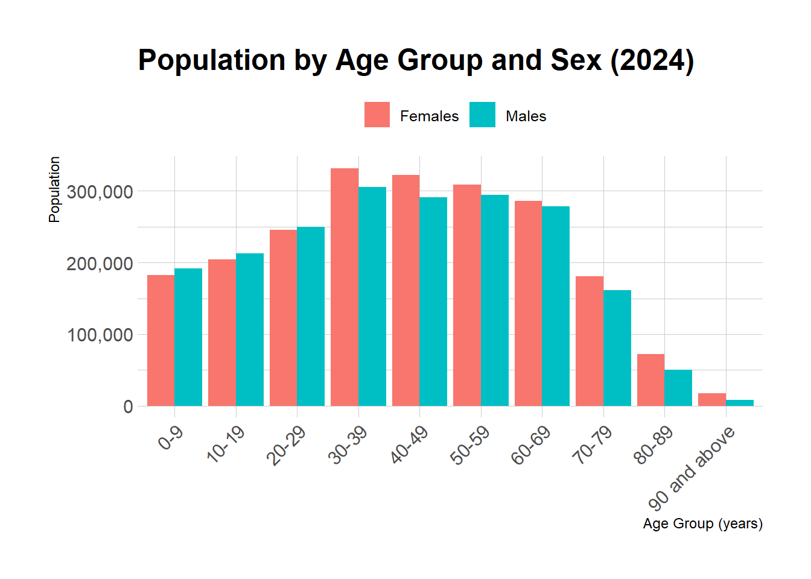
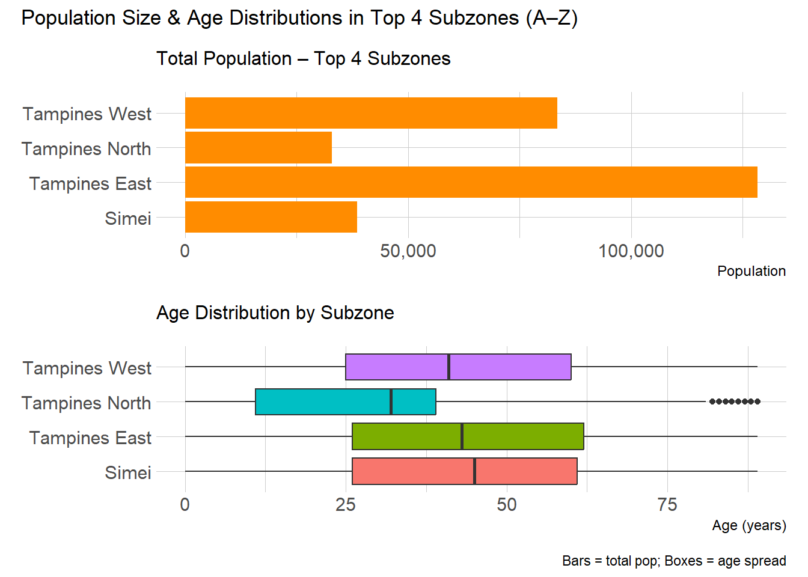

Code
pacman::p_load(ggrepel, patchwork,
ggthemes, hrbrthemes,
tidyverse, ggiraph, plotly,
patchwork, DT, dplyr, scales, forcats, dplyr, grid) Andre Ong Jia Kang
May 1, 2025
May 11, 2025
This study is obtained from a local Singapore dataset to reveal how Singapore’s resident population is distributed by age and sex across its various planning areas and subzones as of June 2024. It helps to map age cohorts geographically, examine sex-ratio, key-demographic locations and population density.
I will be taking a look at the dataset to provide some key insights of the following stated below:
Regional breakdown for policy makers allocating services such as transport based on geographic distributions.
Target professionals providing community healthcare or age-targeted programs for the population.
Launching R packages and libraries required.
The dataset “Singapore Residents by Planning Area / Subzone, Single Year of Age and Sex, June 2024” was obtained from Department of Statistics, Singapore.
Before I analyse the data, I will have a preview of the dataset to find out the number of columns ad character type of it.
Rows: 60,424
Columns: 6
$ PA <chr> "Ang Mo Kio", "Ang Mo Kio", "Ang Mo Kio", "Ang Mo Kio", "Ang Mo K…
$ SZ <chr> "Ang Mo Kio Town Centre", "Ang Mo Kio Town Centre", "Ang Mo Kio T…
$ Age <chr> "0", "0", "1", "1", "2", "2", "3", "3", "4", "4", "5", "5", "6", …
$ Sex <chr> "Males", "Females", "Males", "Females", "Males", "Females", "Male…
$ Pop <dbl> 10, 10, 10, 10, 10, 10, 10, 10, 30, 10, 20, 10, 20, 30, 30, 10, 3…
$ Time <dbl> 2024, 2024, 2024, 2024, 2024, 2024, 2024, 2024, 2024, 2024, 2024,…Observations
Before using the data, I want to check if there is any missing values present.
Based on the result, there is no missing values or “NA” values. The dataset is ready for analysis.
I want to further visualise the PA easier into the 5 Regions in Singapore. Using dplyr’s mutate() + case_when(), I will map each Planning Area (PA) into one of the five regions North, South, East, West and North-East using the following source website. (https://www.newlaunchesreview.com/regions-of-singapore/)
# 3. Define the mapping and create the new column
df <- df %>%
mutate(
Region = case_when(
# Central Region (Core + Rest)
PA %in% c(
"Downtown Core", "Outram", "Sentosa", "Rochor", "Orchard", "Newton",
"River Valley", "Bukit Timah", "Holland Road", "Tanglin", "Novena",
"Thomson", "Marina East", "Marina South", "Museum", "Singapore River",
"Bishan", "Bukit Merah", "Geylang", "Kallang", "Marine Parade",
"Queenstown", "Southern Islands", "Toa Payoh", "Straits View"
) ~ "Central", # :contentReference[oaicite:0]{index=0}
# North Region
PA %in% c(
"Central Water Catchment", "Lim Chu Kang", "Mandai", "Sembawang",
"Simpang", "Sungei Kadut", "Woodlands", "Yishun"
) ~ "North", # :contentReference[oaicite:1]{index=1}
# North-East Region
PA %in% c(
"Ang Mo Kio", "Hougang", "North-Eastern Islands", "Punggol",
"Seletar", "Sengkang", "Serangoon"
) ~ "North-East", # :contentReference[oaicite:2]{index=2}
# East Region
PA %in% c("Bedok", "Changi", "Changi Bay", "Paya Lebar", "Pasir Ris", "Tampines"
) ~ "East", # :contentReference[oaicite:3]{index=3}
# West Region
PA %in% c(
"Bukit Batok", "Bukit Panjang", "Boon Lay", "Pioneer", "Choa Chu Kang",
"Clementi", "Jurong East", "Jurong West", "Tengah", "Tuas",
"Western Islands", "Western Water Catchment", "Benoi", "Ghim Moh",
"Gul", "Pandan Gardens", "Jurong Island", "Kent Ridge", "Nanyang",
"Teban Gardens", "Toh Tuck", "Tuas South", "West Coast"
) ~ "West", # :contentReference[oaicite:4]{index=4}
# Catch-all for any PAs that didn’t match
TRUE ~ NA_character_
)
)
# 4. Inspect
head(df)# A tibble: 6 × 7
PA SZ Age Sex Pop Time Region
<chr> <chr> <chr> <chr> <dbl> <dbl> <chr>
1 Ang Mo Kio Ang Mo Kio Town Centre 0 Males 10 2024 North-East
2 Ang Mo Kio Ang Mo Kio Town Centre 0 Females 10 2024 North-East
3 Ang Mo Kio Ang Mo Kio Town Centre 1 Males 10 2024 North-East
4 Ang Mo Kio Ang Mo Kio Town Centre 1 Females 10 2024 North-East
5 Ang Mo Kio Ang Mo Kio Town Centre 2 Males 10 2024 North-East
6 Ang Mo Kio Ang Mo Kio Town Centre 2 Females 10 2024 North-EastI would like to check the if there are any “NA” values in the Region column.
With no “NA” values present, I will proceed with check the Population count on how many “0” values present for the Sum and the respective Planning Areas.
# A tibble: 13 × 2
PA TotalPop
<chr> <dbl>
1 Boon Lay 0
2 Central Water Catchment 0
3 Changi Bay 0
4 Lim Chu Kang 0
5 Marina East 0
6 Marina South 0
7 North-Eastern Islands 0
8 Paya Lebar 0
9 Pioneer 0
10 Simpang 0
11 Straits View 0
12 Tuas 0
13 Western Islands 0 [1] "Boon Lay" "Central Water Catchment"
[3] "Changi Bay" "Lim Chu Kang"
[5] "Marina East" "Marina South"
[7] "North-Eastern Islands" "Paya Lebar"
[9] "Pioneer" "Simpang"
[11] "Straits View" "Tuas"
[13] "Western Islands" There are 13 Planning Areas with Population Sum = 0 is not useful for visualization. I will remove these 13 PA’s from the dataset and call the new dataset as df2.
With this, I will start the visualization graphs below.
I would want a piechart plot showing the percentage spread of the population in the 5 regions. This will show where majority of the people in the transformed dataset is living at. On top of this, 2 more barchart plots to show the “Top 5” and “Bottom 5” most populated Planning Areas are in Singapore.
# identify top 5 PAs
top5_pa <- df2 %>%
group_by(PA) %>%
summarise(TotalPop = sum(Pop), .groups = "drop") %>%
arrange(desc(TotalPop)) %>%
slice_head(n = 5) %>%
pull(PA)
# prepare stacked bars by sex
p1_data <- df2 %>%
filter(PA %in% top5_pa) %>%
group_by(PA, Sex) %>%
summarise(Pop = sum(Pop), .groups = "drop")
p1 <- ggplot(p1_data, aes(x = fct_reorder(PA, Pop), y = Pop, fill = Sex)) +
geom_col() +
coord_flip() +
scale_y_continuous(labels = comma) +
labs(
title = "Top 5 Planning Areas by Population (2024)",
x = "Planning Area",
y = "Population",
fill = ""
) +
theme_minimal() +
theme(legend.position = "bottom") +
theme(
plot.margin = margin(5, 5, 5, 5),
legend.key.size = unit(0.4, "cm"),
legend.text = element_text(size = 8),
plot.title = element_text(size = 10),
axis.title.x = element_text(size = 8),
axis.title.y = element_text(size = 8)
)
## identify bottom 5 PAs
bottom10_pa <- df2 %>%
group_by(PA) %>%
summarise(TotalPop = sum(Pop), .groups = "drop") %>%
arrange(TotalPop) %>%
slice_head(n = 5) %>%
pull(PA)
# 2. prepare stacked bars by sex
p2_data <- df2 %>%
filter(PA %in% bottom10_pa) %>%
group_by(PA, Sex) %>%
summarise(Pop = sum(Pop), .groups = "drop")
# 3. plot
p2 <- ggplot(p2_data, aes(x = fct_reorder(PA, Pop), y = Pop, fill = Sex)) +
geom_col() +
coord_flip() +
scale_y_continuous(labels = comma) +
labs(
title = "Bottom 5 Planning Areas by Population (2024)",
x = "Planning Area",
y = "Population",
fill = ""
) +
theme_minimal() +
theme(legend.position = "bottom") +
theme(
plot.margin = margin(5, 5, 5, 5),
legend.key.size = unit(0.4, "cm"),
legend.text = element_text(size = 8),
plot.title = element_text(size = 10),
axis.title.x = element_text(size = 8),
axis.title.y = element_text(size = 8)
)
# 3a. Pie chart of Region shares
p3_data <- df2 %>%
group_by(Region) %>%
summarise(TotalPop = sum(Pop, na.rm = TRUE), .groups = "drop") %>%
mutate(Percent = TotalPop / sum(TotalPop) * 100)
# 2) Draw pie chart
p3 <- ggplot(p3_data, aes(x = "", y = TotalPop, fill = Region)) +
geom_col(width = 1, color = "white") +
coord_polar(theta = "y") +
geom_text(aes(label = paste0(round(Percent, 1), "%")),
position = position_stack(vjust = 0.5), size = 2) +
labs(title = "Population Percentage by Region",
x = NULL, y = NULL, fill = NULL) +
theme_void() +
theme(
plot.title = element_text(size = 10, margin = margin(b = 5), vjust = -28),
legend.position = "right",
legend.key.size = unit(0.4, "cm"),
legend.text = element_text(size = 6),
legend.title = element_blank(),
plot.margin = margin(t = 5, r = 5, b = 5, l = 5)
)
combined <- (p1 / p2) | p3 +
plot_layout(widths = c(2, 1.5)) +
# --- ADJUSTMENT for overall ---
plot_annotation(theme = theme(
plot.margin = margin(10, 10, 10, 10)
))
print(combined)
Discussion:
Based on the initial view, I would like to check the spread of ages across the population in the dataset. To visualize the distribution for male and female, we will plot a bar chart with Age as the X-axis, Population as the Y-axis and bar graphs representing the sex. For the age, I will bin them in 10-year bands for better aesthetic purposes.
df3 <- df2 %>%
# ensure Age is numeric
mutate(Age = as.numeric(Age)) %>%
# now bin into 10-year groups
mutate(
AgeGroup = cut(
Age,
breaks = seq(0, 100, by = 10),
right = FALSE,
labels = paste0(seq(0, 90, by = 10), "-", seq(9, 99, by = 10))
)
) %>%
group_by(AgeGroup, Sex) %>%
summarise(Pop = sum(Pop), .groups = "drop")
df3 <- df3 %>%
mutate(
AgeGroup = fct_explicit_na(AgeGroup, na_level = "90 and above")
)
p4 <- ggplot(df3, aes(x = AgeGroup, y = Pop, fill = Sex)) +
geom_col(position = "dodge") +
scale_y_continuous(labels = comma) +
labs(
title = "Population by Age Group and Sex (2024)",
x = "Age Group (years)",
y = "Population",
fill = ""
) +
theme_ipsum() +
theme(
axis.text.x = element_text(angle = 45, hjust = 1),
legend.position = "top"
)
p4
Discussion:
The age distribution has a positive skew with most of the population in the middle age ranges.
Females do appear slightly higher than males from 30 years old onwards which might reflect women having longer lifespan.However, the disparity isn’t very obvious and it is well balanced distribution.
I would like to find out the highest 4 subzones in Tampines based on the population graph. To see which subzones contributed to it and what is the age group living there. I will first plot a barchart and also boxplot to visualize these properly.
# 1) Find & alphabetize your top 4 subzones
top4_sz <- df2 %>%
filter(PA == "Tampines") %>%
group_by(SZ) %>%
summarise(TotalPop = sum(Pop), .groups = "drop") %>%
slice_max(TotalPop, n = 4) %>%
pull(SZ)
alpha_levels <- sort(top4_sz)
# 2) Bar‐chart data (with ordered factor)
bar_data <- df2 %>%
filter(SZ %in% top4_sz) %>%
group_by(SZ) %>%
summarise(TotalPop = sum(Pop), .groups = "drop") %>%
mutate(SZ = factor(SZ, levels = alpha_levels))
p_bar <- ggplot(bar_data, aes(x = SZ, y = TotalPop)) +
geom_col(fill = "darkorange") +
coord_flip() +
scale_y_continuous(labels = comma) +
labs(subtitle = "Total Population – Top 4 Subzones", x = NULL, y = "Population") +
theme_ipsum(plot_margin = margin(8, 8, 8, 8))
# 3) Boxplot data (with same ordered factor)
box_data <- df2 %>%
filter(SZ %in% top4_sz) %>%
mutate(
Age = as.numeric(Age),
SZ = factor(SZ, levels = alpha_levels)
) %>%
select(SZ, Age, Pop) %>%
uncount(weights = Pop)
p_box <- ggplot(box_data, aes(x = SZ, y = Age, fill = SZ)) +
geom_boxplot(alpha = 1.5, show.legend = FALSE) +
coord_flip() +
labs(subtitle = "Age Distribution by Subzone", x = NULL, y = "Age (years)") +
theme_ipsum(plot_margin = margin(8, 8, 8, 8))
# 4) Combine
(p_bar / p_box) +
plot_annotation(
title = "Population Size & Age Distributions in Top 4 Subzones (A–Z)",
caption = "Bars = total pop; Boxes = age spread"
)
Discussion: - There is a obvious majority of the population in Tampines staying in Tampines West & East.
Based on the boxplot, the IQR (Lower, Median, Upper Quantile) is between 25 to 60 years old. Only residents at Tampines North is lower between 10 to 35 years old. This could be due to newer house such as BTO at Tampines North areas.
This trend can inform on transport services focusing in the busiest areas at Tampines West & East as the population is significantly larger as compared to Tampines North & Simei.